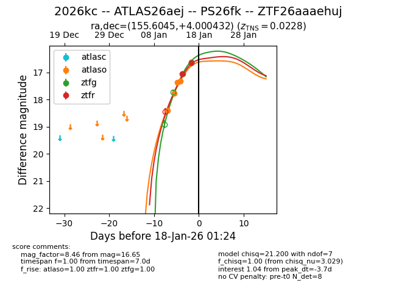
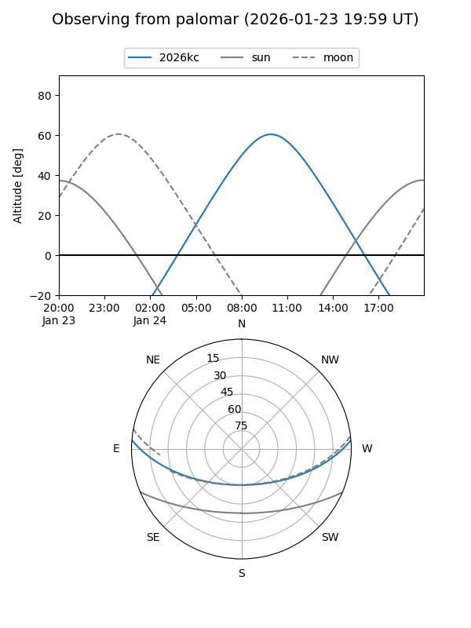
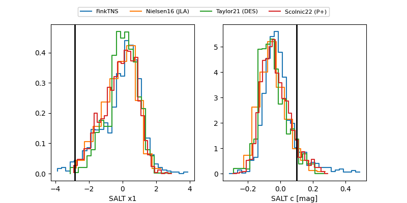

2026kc
Target 2026kc at 2026-01-22 19:21
Aliases and brokers:
FINK: link
Lasair: link
ALeRCE: link
TNS: link
YSE: link
alt names
ZTF26aaaehuj (ztf,fink_ztf)
2026kc (tns,yse)
ATLAS26aej (atlas)
PS26fk (panstarrs)
Coordinates:
equatorial (ra, dec) = 155.6045,+4.00043
equatorial (HMS+DMS) = 10:22:25.09,+04:00:01.55
galactic (l, b) = (239.3467,+47.60133)
Flags:
confirmed ia
Photometry:
last atlasc=16.53, atlaso=16.43, ztfg=16.16, ztfr=16.24
1 atlasc, 7 atlaso, 3 ztfg, 4 ztfr detections
Lightcurve

Visibility


Additional plots
